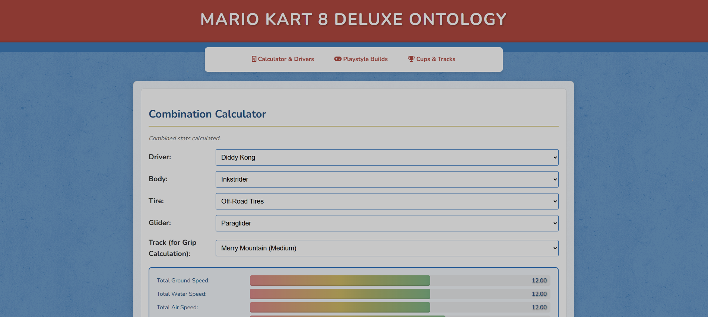
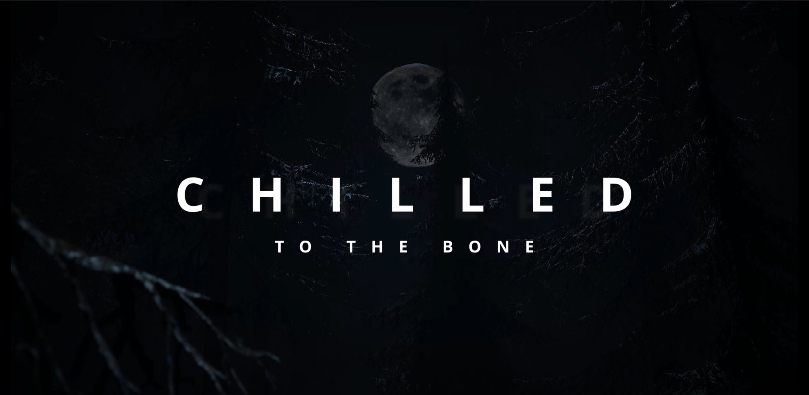
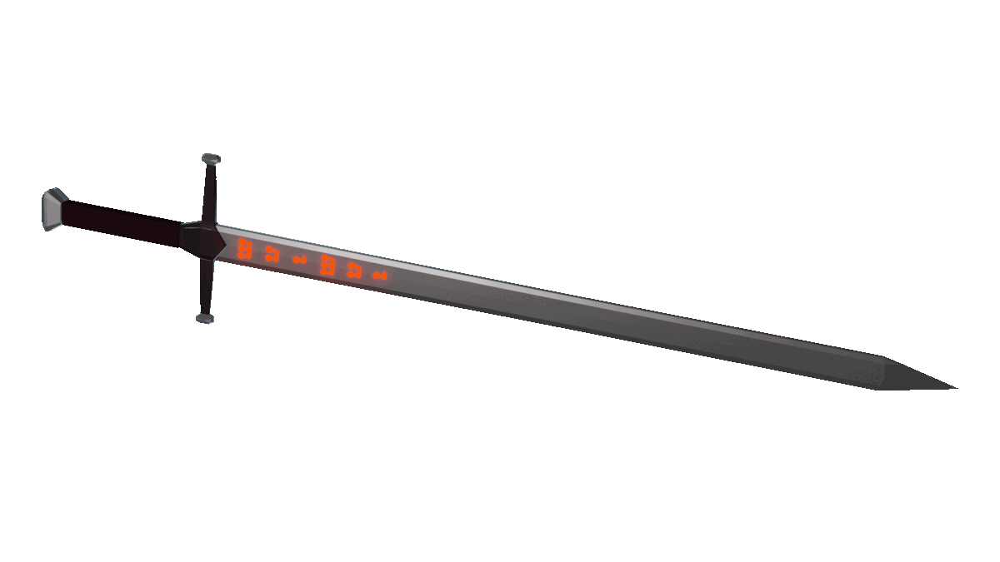

Complicity (Bachelor Thesis)
A Game-Based Study of How Role Perspective Shapes Awareness and Understanding of Exploitative Design Practices.
Selected projects across game development, interaction design, and web tooling.
A Game-Based Study of How Role Perspective Shapes Awareness and Understanding of Exploitative Design Practices.

Ontology-powered comparison tool for build decisions and track condition analysis.

Unity jump-and-run game prototype focused on responsive movement, level flow, and playful co-op concepts.

Story-driven VR horror prototype with environmental narrative and world exploration.

Interactive micro:bit prototype that detects acceleration and plays different sounds based on how the device is swung.